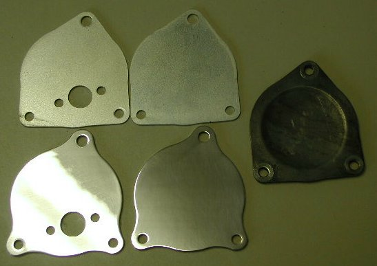
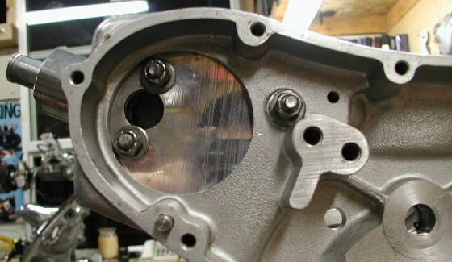

We stock four versions of this blanking plate: two plain blanking plates and two modified plates to accept the 1972 crank case breather manifold as described in our technical article, Oil Pressure Loss, Norton 750cc (1972-73). We do not modify the stock plate since it is dished in the center and does not have a flat place to mount the breather manifold.
- The upper left plate is the Andover Norton steel plate modified for the breather (part # 06-1542/M, DROPPED)
- The upper middle plate is the stock Andover Norton steel plate (part # 06-1542, $5.05)
- The lower left plate is the polished 6061-T6 aluminum plate modified for the breather (part # 06-1542/AM, $40.00)
- The lower middle plate is the polished 6061-T6 aluminum plate (part # 06-1542/A, $37.00)
- The far right plate is an original blanking plate and as you can see it is dished in the center, not having a flat area to mount the breather manifold.


This page was written and designed by F. H. Eaton & Associates if you have any questions or comments please contact us at info@fheaton.com